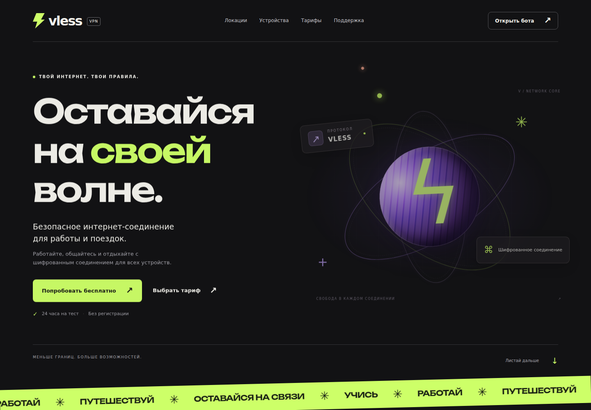
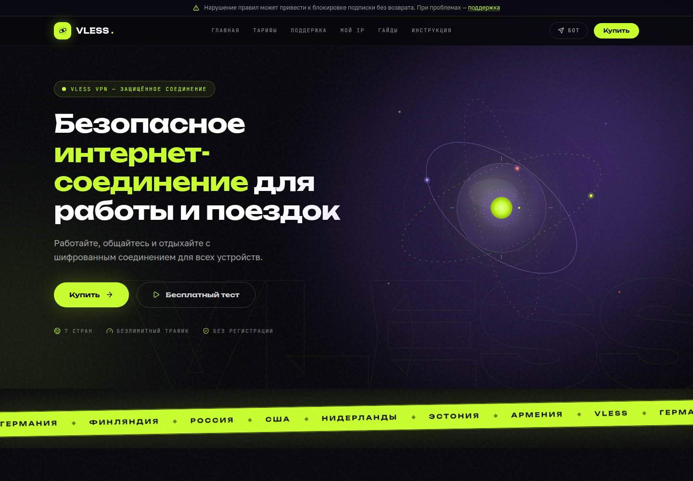
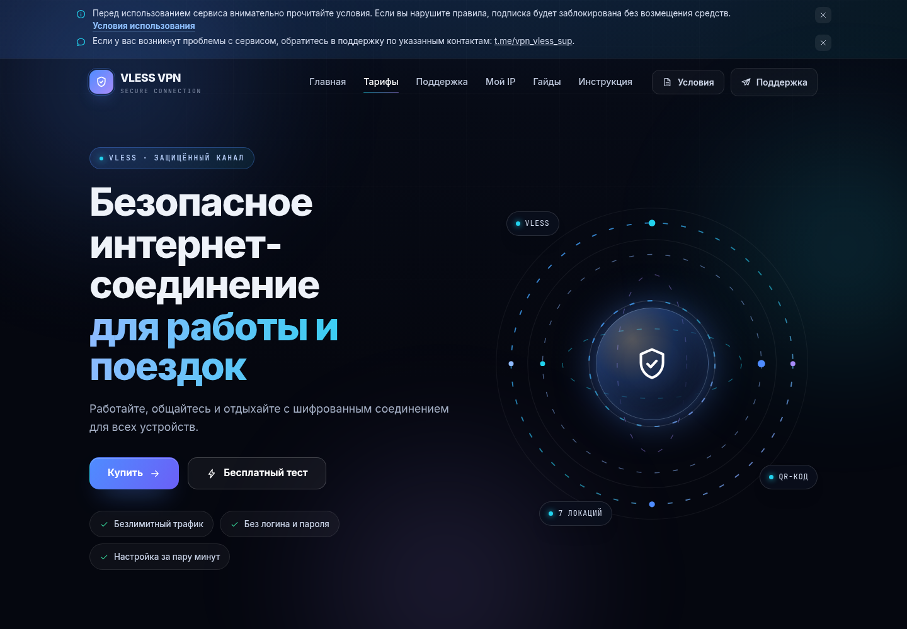

На своей волне
Крупная типографика, сочные акценты и объёмная графика соединения.
Посмотреть вариант ↗Выберите вариант, чтобы посмотреть страницу целиком, оценить оформление, анимации и то, как сайт выглядит на вашем устройстве.

Крупная типографика, сочные акценты и объёмная графика соединения.
Посмотреть вариант ↗
Светящиеся орбиты, контрастные секции и интерактивная схема локаций.
Посмотреть вариант ↗
Ещё один взгляд на сервис: исследуйте страницу и сравните впечатления.
Посмотреть вариант ↗